Real-world Infrastructure & Network Solutions
Hands-on experience installing, testing and maintaining fiber optic infrastructure including fusion splicing, fiber termination, ODF installation, OTDR testing and optical power measurement.
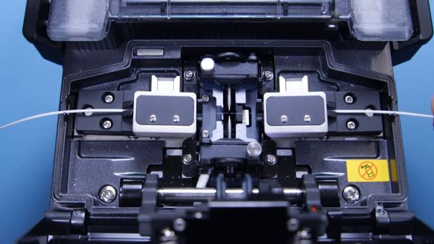
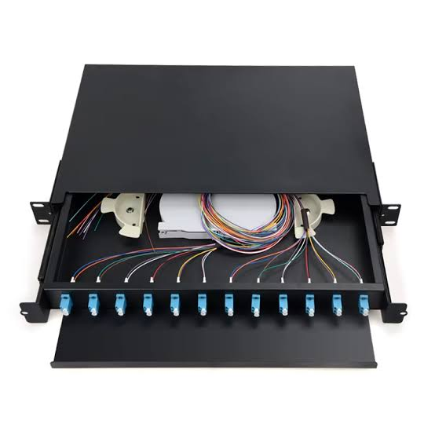
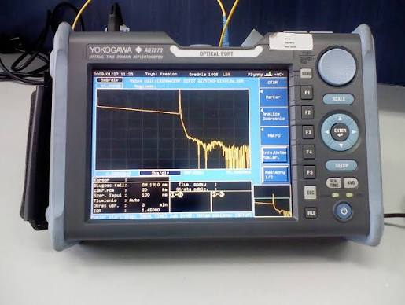
Installation, configuration support and troubleshooting of business network infrastructure including LAN, switches, VLANs, MikroTik RouterOS and connectivity solutions.
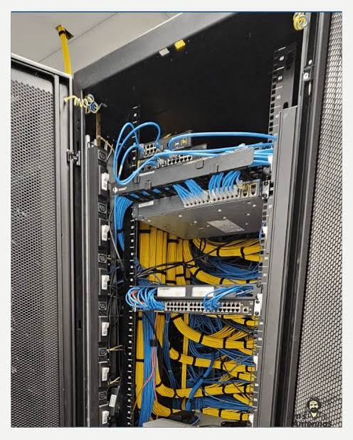
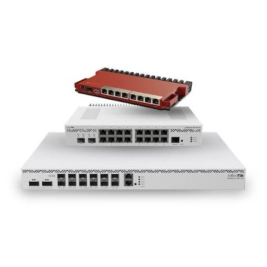
Experience in installing, configuring and supporting wireless network solutions including access points, Wi-Fi coverage improvement, hotspot systems and wireless connectivity troubleshooting.
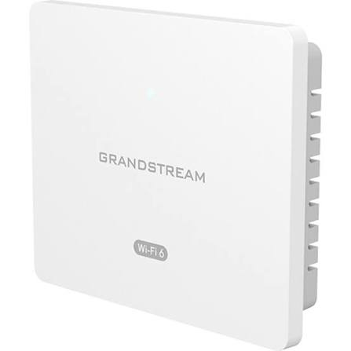
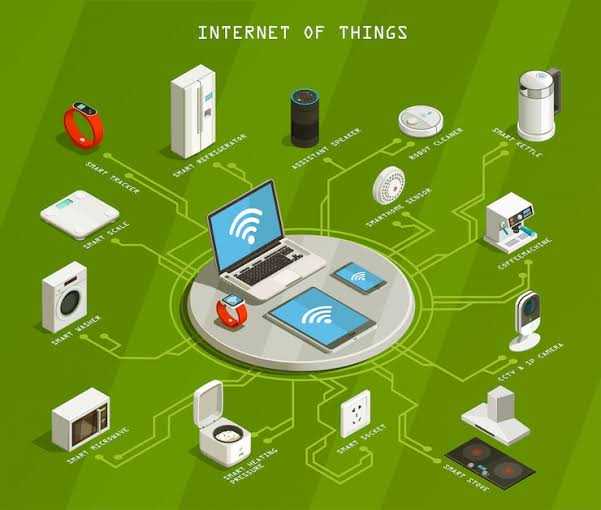
Experience installing, configuring and maintaining security surveillance systems including IP cameras, analog cameras, NVR systems, structured cabling and security infrastructure support.
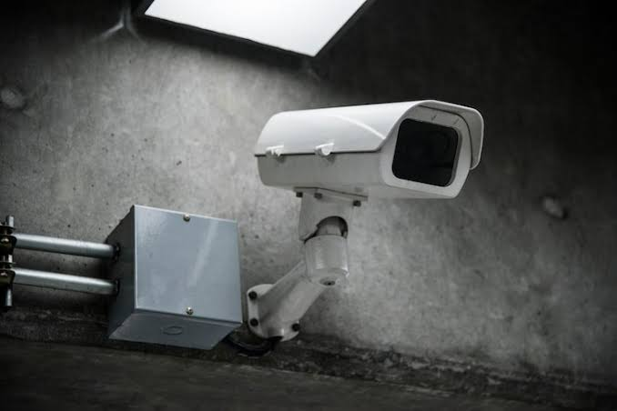
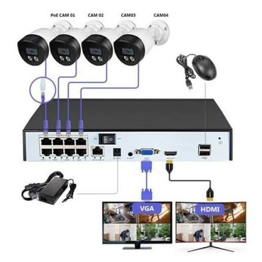
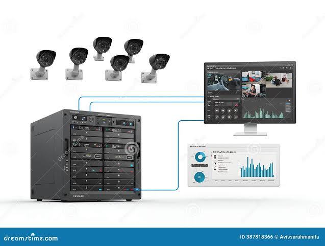
Hands-on experience supporting IP-based communication systems including IP PBX installation, SIP configuration, IP phone setup, troubleshooting and maintenance of business voice communication solutions.
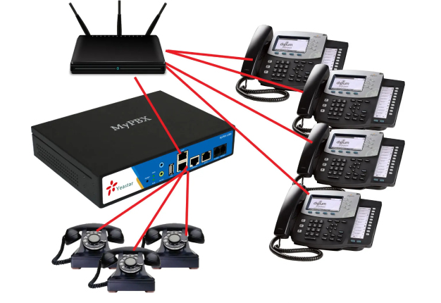
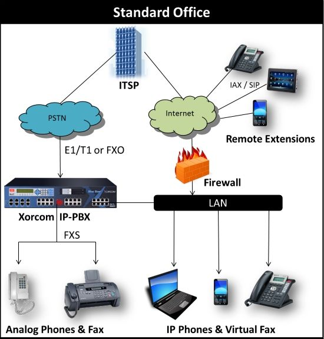
Hands-on experience installing and supporting structured cabling systems for reliable network infrastructure, including copper and fiber cabling, rack organization, termination, testing and documentation.